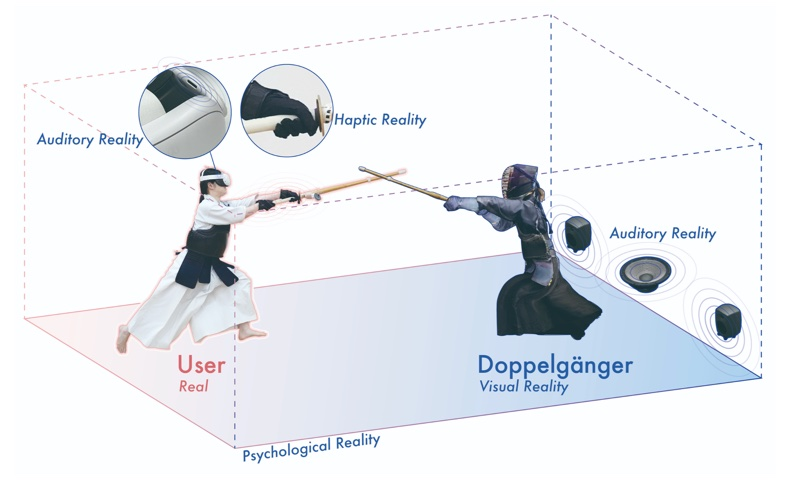

Discipline Together with the Self in Kendo: Exploring "Qi" through Mixed Reality and Autoethnography
Proceedings of the ACM on Computer Graphics and Interactive Techniques, 8(3), 2025 (SIGGRAPH 2025)

Abstract
In an era where swords are no longer wielded to kill but to enhance human lives, swordfights are not about confronting the opponent in front of you but facing yourself. At the core of modern-day combat lies the cultivation of virtues such as etiquette, patience, and mental unity — principles similarly embraced in kendo. Resonating with these principles of kendo, the authors embarked on an exploration of "self," "sword," and "qi" in mixed reality. The author served as a model for this digital human practice of kendo alone in mixed reality using the developed application. This experience of engaging with oneself, sword, and qi has been shared through autoethnography. The researchers hope this documentation contributes to personal growth and enrichment of the spiritual culture in society.